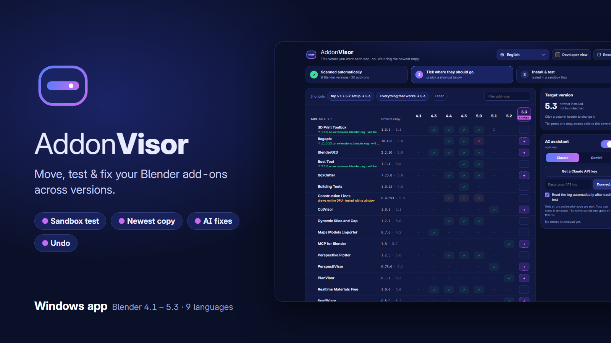
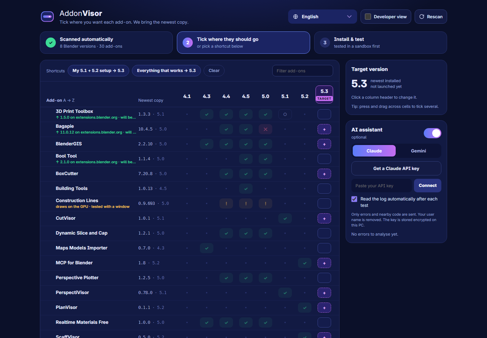
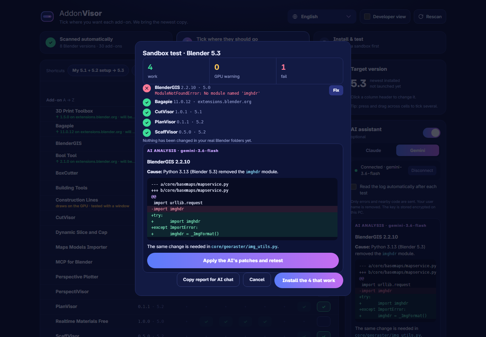
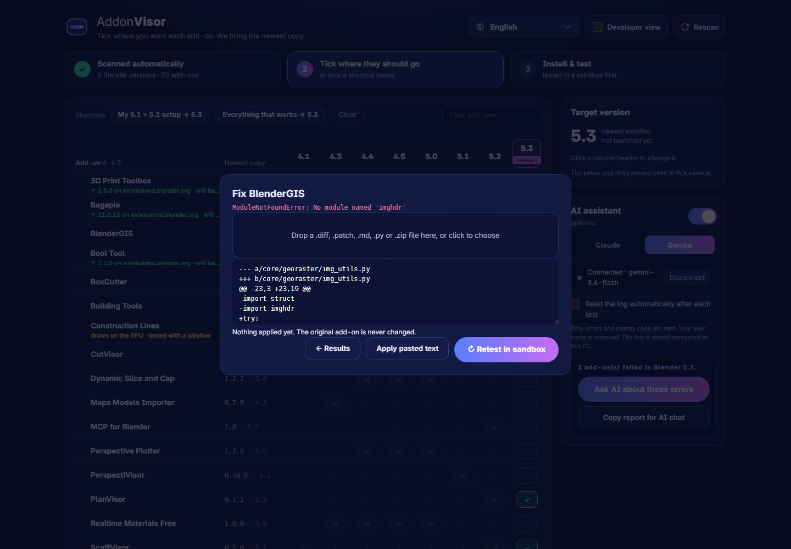
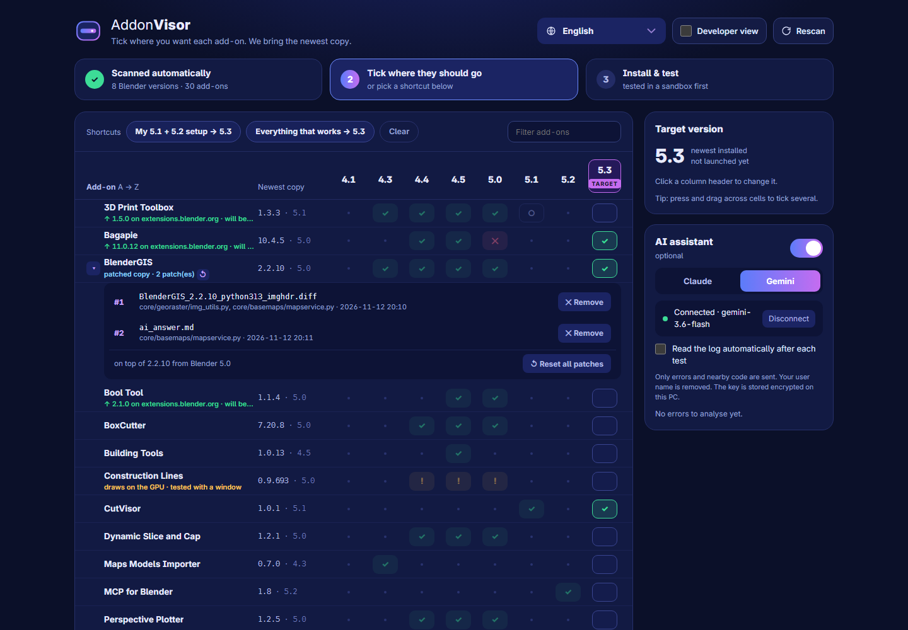

AddonVisor
Qu’est-ce que c’est ?
Une nouvelle version de Blender sort, vous l’installez — et vos add-ons n’y sont pas. Vous les recopiez un par un, vous les activez, et vous ne découvrez ceux qui sont cassés qu’au moment où vous en avez besoin.
AddonVisor est une petite application Windows qui fait tout cela pour vous, en dehors de Blender. Elle trouve toutes les versions de Blender de votre PC, montre quels add-ons vous utilisez dans chacune, les déplace vers la version de votre choix, les teste dans un bac à sable avant de modifier quoi que ce soit, et vous dit précisément ce qui ne marche pas et pourquoi — avec une correction quand il en existe une.

Philosophie
En dehors de Blender, pour tout voir
Un add-on dans Blender ne voit que cette version-là. AddonVisor fonctionne de façon autonome : il peut donc comparer toutes vos versions de Blender à la fois — y compris celles que vous n’avez jamais ouvertes.
Tester d’abord, modifier ensuite
Rien n’est réellement installé avant d’avoir fonctionné dans une copie jetable des paramètres de la cible. Vous décidez quoi installer après avoir vu le résultat.
Ne jamais toucher aux originaux
Les anciennes versions de Blender sont uniquement lues. Les corrections se font sur une copie. Chaque installation réelle a sa sauvegarde et peut être annulée.
Peu de clics
L’analyse se fait toute seule ; la version de Blender la plus récente est choisie comme cible, et la copie la plus récente de chaque add-on est retenue. La plupart des migrations tiennent en deux clics : un raccourci, puis Installer et tester.
Pour qui ?
Installation
Configuration requise
- Windows 10 ou 11, 64 bits
- Microsoft Edge WebView2 Runtime — intégré à Windows 11 et généralement présent sur Windows 10
- Une ou plusieurs versions de Blender installées. Testé avec 4.1 – 5.3 ; les versions 2.8x – 4.0 devraient fonctionner mais n’ont pas été testées.
- Internet uniquement pour les téléchargements depuis extensions.blender.org et pour l’assistant IA facultatif
Installateur
Lancez AddonVisor-Setup-0.3.3.exe. Aucun droit d’administrateur n’est nécessaire. AddonVisor apparaît dans le menu Démarrer et dans Paramètres → Applications, d’où vous pouvez le désinstaller.
Version portable
Décompressez AddonVisor-0.3.3-portable.zip où vous voulez et lancez AddonVisor.exe. Le zip contient aussi le code source complet.
Premier lancement
- AddonVisor analyse votre PC tout seul : Program Files, Steam, le registre Windows et les dossiers de Blender portables. Chaque Blender est lancé de façon invisible en arrière-plan pour lire ses add-ons — cela prend quelques secondes.
- La matrice s’affiche. La version de Blender la plus récente est sélectionnée comme cible.
- Changez de langue avec le bouton en haut à droite : English, Français, Español, Deutsch, Русский, 简体中文, 日本語, Português (Brasil), Română. Le bouton Aide ouvre ce guide.
Lire la matrice
| Symbole | Signification |
|---|---|
| ✓ | activé et fonctionnel dans cette version de Blender |
| ○ | installé mais désactivé |
| ✕ | activé mais ne se charge pas — survolez pour voir l’erreur |
| ! | add-on GPU : ne peut pas se charger en arrière-plan, retesté avec une petite fenêtre |
| + | en attente : sera installé dans la version cible |
La colonne Copie la plus récente indique la version la plus récente de l’add-on trouvée sur votre PC et le Blender d’où elle provient. Des notes sous le nom vous signalent qu’une version plus récente existe sur extensions.blender.org, qu’une version est connue pour échouer, ou que vous avez une copie corrigée.
1 · Choisir la cible
Cliquez sur l’en-tête d’une colonne pour faire de ce Blender la cible. Par défaut, c’est la version installée la plus récente — même si vous ne l’avez jamais ouverte.
2 · Cocher les add-ons
- Cliquez sur une case vide de la colonne cible pour mettre cet add-on en attente ; cliquez à nouveau pour le retirer.
- Cliquez et glissez le long de la colonne pour en cocher plusieurs d’un coup.
- Ou utilisez un raccourci : Ma config 5.1 + 5.2 → 5.3 (tout ce qui est activé dans vos deux versions les plus récentes), Tout ce qui marche → 5.3, ou Effacer.
- Les add-ons installés mais jamais activés sont masqués sous Afficher N add-ons jamais activés.
Quelle copie est utilisée
Vous ne choisissez jamais de version source. Pour chaque add-on, AddonVisor examine toutes les copies présentes sur votre PC et utilise, dans cet ordre :
- votre copie corrigée, si vous avez réparé l’add-on (voir Réparer sur une copie) ;
- une version compatible plus récente sur extensions.blender.org — si elle existe, ou si votre copie locale est connue pour échouer. La ligne indique « ↑ 11.0.12 sur extensions.blender.org · sera utilisée » et Blender la télécharge lui-même ;
- sinon, la copie locale la plus récente qui déclare prendre en charge la cible (
blender_version_min/maxoubl_info["blender"]).
3 · Installer et tester
Appuyez sur Installer et tester (N).
- Test en bac à sable. Le dossier utilisateur de la cible est copié dans un dossier temporaire, et Blender est lancé sur cette copie. Les add-ons y sont copiés et activés un par un. Rien ne change dans vos vrais dossiers Blender. Les add-ons GPU sont retestés avec une petite fenêtre — vous la verrez peut-être apparaître brièvement.
- Résultats. Vous voyez ce qui fonctionne et ce qui échoue, avec la vraie erreur Python. Choisissez ensuite Installer les N qui fonctionnent, Réparer à côté d’un add-on en échec, ou Annuler.

imghdr), Bagapie vient d’extensions.blender.org. Avec l’assistant IA activé, son analyse apparaît juste en dessous.Annulation et sauvegardes
Avant une installation réelle, AddonVisor sauvegarde vos préférences et chaque fichier qu’il remplace.
- Dans la fenêtre des résultats : ↶ Annuler.
- Plus tard : ↶ Annuler la dernière installation dans le panneau Version cible.
L’annulation supprime ce qui a été ajouté, remet en place ce qui a été remplacé et restaure vos préférences (ou les supprime, si ce Blender n’en avait pas auparavant).
Réparer sur une copie
Quand un add-on échoue, appuyez sur Réparer à côté de lui. AddonVisor crée une copie corrigée et y applique votre correction — l’original n’est jamais modifié.
| Ce que vous fournissez | Ce qui se passe |
|---|---|
Un diff (.diff, .patch) | Repéré grâce au code environnant ; les numéros de ligne sont ignorés, donc les diffs écrits par une IA fonctionnent |
Une réponse complète d’un chat IA (.md ou texte collé) | Chaque bloc ```diff qu’elle contient est appliqué |
Un fichier .py complet | Remplace le fichier du même nom dans l’add-on |
Un .zip de l’add-on réparé | Remplace toute la copie |
Déposez un fichier dans la zone, cliquez dessus pour en choisir un, ou collez du texte et appuyez sur Appliquer le texte collé. Les patchs de n’importe quelle IA fonctionnent — Claude, ChatGPT, Gemini, Copilot. Appuyez ensuite sur ↻ Retester dans le bac à sable. Si l’assistant intégré a répondu avec un diff, Appliquer les patchs de l’IA et retester fait tout en un clic.

Règles de sécurité
- Tout ou rien. Si une partie d’un patch ne correspond pas, rien n’est écrit et on vous indique le fichier et la ligne.
- Pas de double patch. Un patch déjà appliqué est refusé.
- L’indentation compte. En Python, elle change le sens du code ; elle doit donc correspondre (tabulations ou 4 espaces : la différence est tolérée).
%LOCALAPPDATA%\AddonVisor\logs\.La liste des patchs
Les lignes avec des patchs affichent ▸. Cliquez dessus pour voir chaque patch : numéro, nom du fichier, fichiers modifiés et date.
- ✕ Retirer annule un seul patch : la copie est reconstruite à partir de l’original et les autres patchs sont réappliqués, dans l’ordre. Si un patch ultérieur en dépend, rien ne change et on vous indique lequel retirer d’abord.
- ↺ Réinitialiser les patchs — ou le petit ↺ à côté de la note — supprime la copie corrigée ; l’original est de nouveau utilisé.

Exemple : BlenderGIS dans Blender 5.3
Blender 5.3 embarque Python 3.13, qui a supprimé le module imghdr. BlenderGIS 2.2.10 l’utilise dans deux fichiers et échoue avec ModuleNotFoundError: No module named 'imghdr'. Ce patch continue d’utiliser imghdr là où il existe et, sinon, se rabat sur une petite vérification de l’en-tête :
--- a/core/georaster/img_utils.py +++ b/core/georaster/img_utils.py @@ -23,3 +23,19 @@ import struct -import imghdr +try: + import imghdr +except ImportError: # removed in Python 3.13 (Blender 5.3+) + class imghdr: + @staticmethod + def what(_file, h): ...
Téléchargez le patch complet : BlenderGIS_2.2.10_python313_imghdr.diff — puis Réparer → déposez le fichier → Retester.
Connexion et utilisation
Facultatif. Après un test en échec, il lit le rapport d’erreurs et explique ce qui ne marche pas et comment le réparer, généralement avec un diff prêt à l’emploi. Sans lui, AddonVisor fonctionne entièrement et rien ne quitte votre ordinateur.
Gemini — clé gratuite avec votre compte Google
- Appuyez sur Continuer avec Google ; Google AI Studio s’ouvre dans votre navigateur.
- Connectez-vous, appuyez sur Créer une clé API et copiez-la.
- Collez-la dans AddonVisor et appuyez sur Connecter.
Claude — clé API payante
- Appuyez sur Obtenir une clé API Claude ; la Claude Console s’ouvre.
- Ajoutez du crédit sous Billing, puis créez une clé sous API keys (elle n’est affichée qu’une seule fois).
- Collez-la et appuyez sur Connecter. Un abonnement Claude Pro/Max n’inclut pas l’utilisation de l’API ; une analyse coûte quelques centimes.
Utilisation
- Lire le journal automatiquement après chaque test (activé par défaut) : la réponse apparaît dans la fenêtre des résultats.
- Ou appuyez sur Demander à l’IA.
- Si un modèle est surchargé, AddonVisor patiente et en essaie un autre tout seul ; si cela échoue encore, appuyez sur ↻ Réessayer.
Ce qui est envoyé à l’IA
Uniquement le rapport des add-ons en échec : l’erreur Python et environ 17 lignes de code autour de la ligne fautive. Les chemins contenant votre nom d’utilisateur Windows sont remplacés par %USERPROFILE%. Les clés sont stockées chiffrées pour votre utilisateur Windows (DPAPI) ; Déconnecter les supprime. Modèles : Claude claude-opus-5-5 ; Gemini — le modèle Flash le plus récent accessible avec votre clé.
Fichiers et dossiers
Tout se trouve dans %LOCALAPPDATA%\AddonVisor\ et est conservé lors de la désinstallation, pour que vos sauvegardes subsistent.
| Dossier / fichier | Contenu |
|---|---|
backups\ | sauvegarde avant chaque installation réelle (utilisée pour l’annulation) |
logs\ | run_*.log et ai_report_*.md pour chaque test |
patched\ | vos copies corrigées des add-ons, avec chaque patch appliqué |
settings.json | langue, options de l’IA, dossiers Blender supplémentaires |
keys.json | clés d’IA, chiffrées pour votre utilisateur Windows |
Confidentialité
- Pas de compte, pas de télémétrie, pas de statistiques d’utilisation.
- Réseau uniquement pour extensions.blender.org (quelles extensions existent, et téléchargements via Blender) et pour le fournisseur d’IA que vous avez connecté.
- Tout le reste reste sur votre PC.
Dépannage
| Problème | Que faire |
|---|---|
| Une version de Blender manque | Ajoutez son dossier dans settings.json : {"extra_dirs": ["D:\\Apps\\blender-5.3"]}, puis Réanalyser. Les installations depuis le Microsoft Store ne sont pas prises en charge. |
| Une fenêtre Blender apparaît brièvement pendant le test | C’est normal : les add-ons GPU sont retestés avec une fenêtre. Elle se ferme toute seule. |
| « IA injoignable : … high demand » | Le fournisseur est surchargé ; d’autres modèles ont déjà été essayés. Appuyez sur ↻ Réessayer plus tard. |
| « hunk N does not match the file » | Le patch a été écrit pour un autre code (une autre version, ou la copie est déjà corrigée). Ouvrez ▸, retirez ou réinitialisez les patchs et réessayez. |
| « this patch is already applied » | Rien à faire — la modification est déjà dans la copie. |
| « could not delete … a file is in use » | Fermez les fenêtres de l’Explorateur ou les éditeurs qui affichent des fichiers de patched\, puis réessayez. |
| La fenêtre est vide | Installez ou réparez Microsoft Edge WebView2 Runtime. |
| Avertissement SmartScreen / antivirus | Informations complémentaires → Exécuter quand même ; restaurez le fichier depuis la quarantaine si nécessaire — et prévenez-nous pour que nous signalions le faux positif. |
Pour signaler un problème, joignez le run_*.log le plus récent de %LOCALAPPDATA%\AddonVisor\logs\ et indiquez vos versions de Blender : Issues GitHub ou gmcis.cutvisor@gmail.com.
FAQ
Est-ce un add-on Blender ?
Non — c’est une application Windows séparée. C’est pour cela qu’elle peut voir toutes vos versions de Blender à la fois.
Peut-il casser ma configuration Blender ?
Tout est d’abord testé dans un bac à sable ; les installations réelles demandent votre confirmation, font une sauvegarde et peuvent être annulées.
Répare-t-il les add-ons automatiquement ?
Il utilise une version compatible plus récente depuis extensions.blender.org quand il en existe une ; sinon, vous appliquez un patch (de l’IA intégrée ou de n’importe quelle autre) sur une copie et vous retestez. Certains add-ons nécessitent l’intervention de leur auteur.
Fonctionne-t-il avec les add-ons que j’ai achetés ?
Oui — il copie ce qui est installé sur votre PC et ne partage jamais vos add-ons.
Mac / Linux ?
Pas encore.
Le code source est-il inclus ?
Oui. AddonVisor est distribué sous licence GNU GPL v3 ; le code source est inclus dans le téléchargement.
Obtenir AddonVisor
10 $, paiement unique, mises à jour gratuites pour toutes les versions 0.x. Vous obtenez l’installateur, une version portable et le code source complet.
- Gumroad — lien bientôt disponible
- Superhive — lien bientôt disponible
Historique des versions
0.3.3
- Le bouton Aide de l’application ouvre ce guide, dans votre langue.
0.3.2
- Liste des patchs par add-on : retirez les patchs un par un ou réinitialisez-les tous.
- Un patch déjà appliqué est refusé au lieu d’être appliqué deux fois ; l’indentation doit correspondre.
- La suppression d’une copie corrigée est retentée quand Windows verrouille brièvement un fichier.
0.3.0
- Réparation sur une copie : diffs, réponses complètes d’IA, fichiers .py ou .zip, puis nouveau test.
- « Appliquer les patchs de l’IA et retester » en un clic. Nouveau logo et nouvelle icône.
0.2.0
- Assistant IA (Gemini ou Claude), clés chiffrées, nouvelle tentative automatique et repli sur un autre modèle.
- Téléchargements depuis extensions.blender.org, annulation, sélection par glisser, interface en roumain, exe en un seul fichier.
0.1.0
- Analyse, matrice, test en bac à sable, installation avec sauvegarde, rapport prêt pour l’IA, 8 langues.